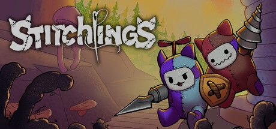
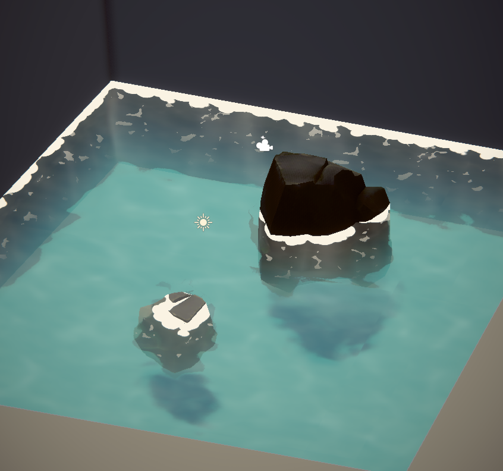
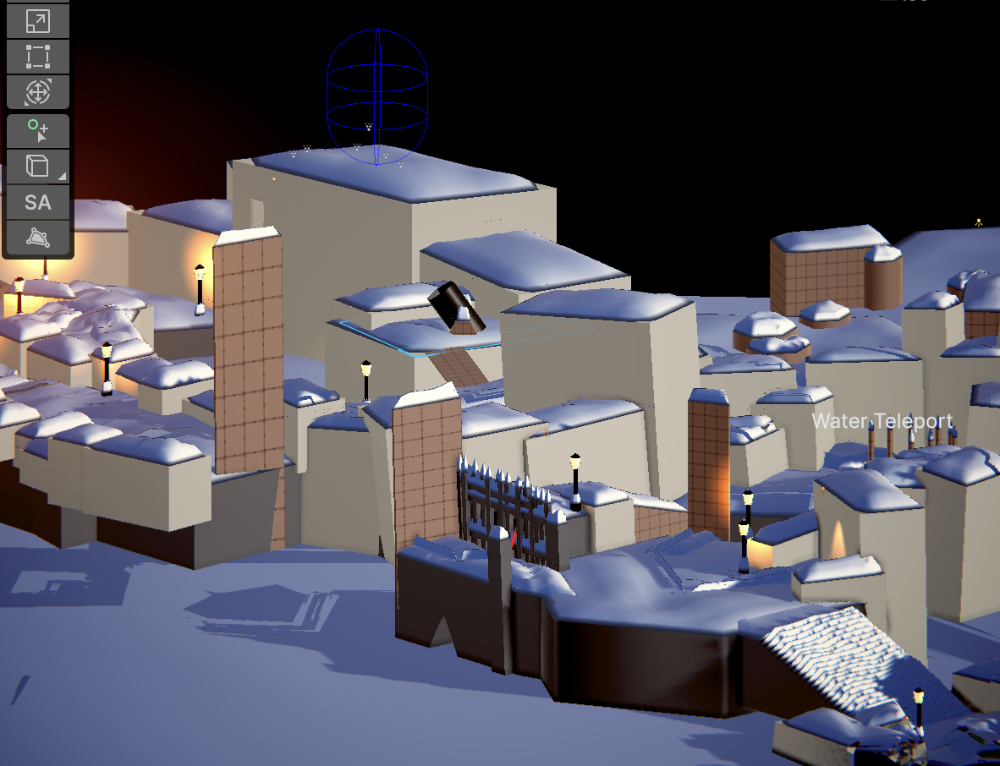

Solo graphics programmer & VFX developer on a 40-person team developing a couch co-op with 10K+ downloads.
The game was lacking some visual depth and detail to make it even more immersive. Scenes needed water and snow that read as environmentally accurate and immersive rather than static — plus a full VFX language for boss abilities and enemy death effects that didn't exist yet.

